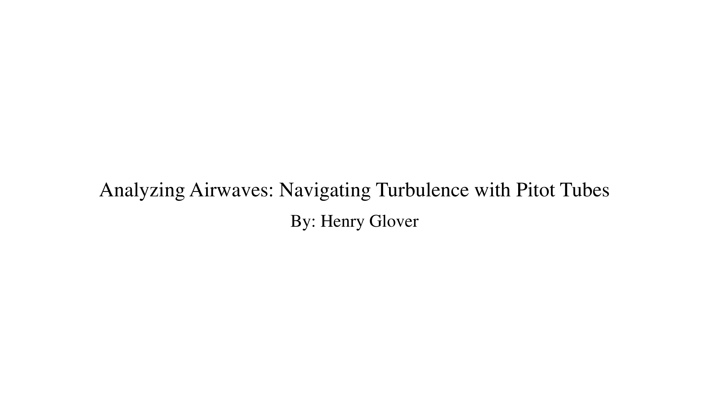
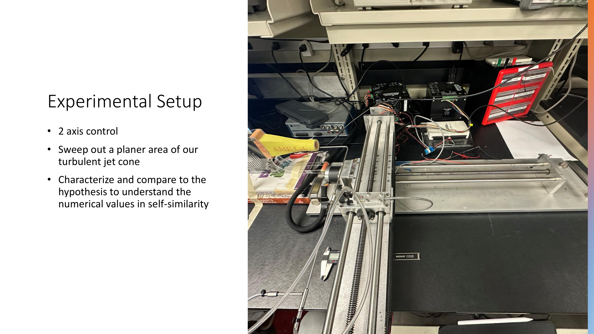
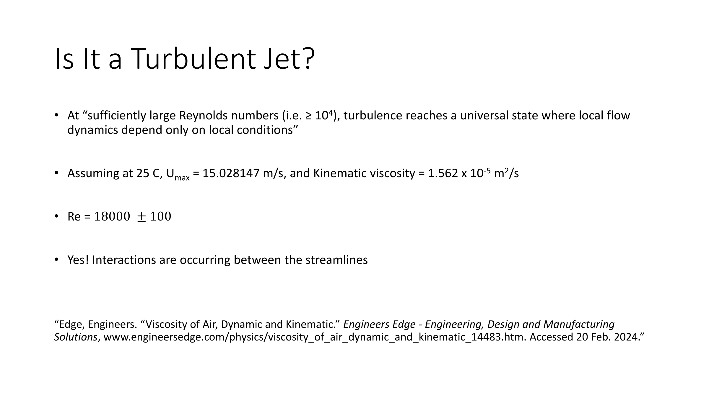
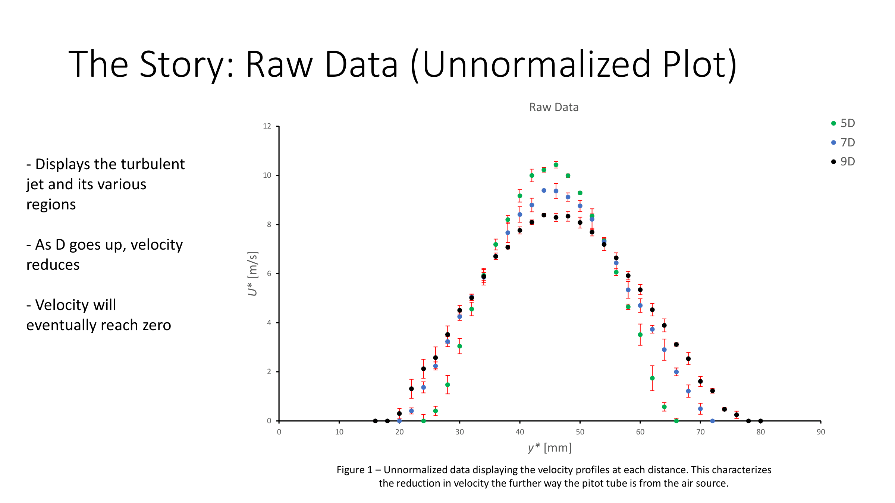
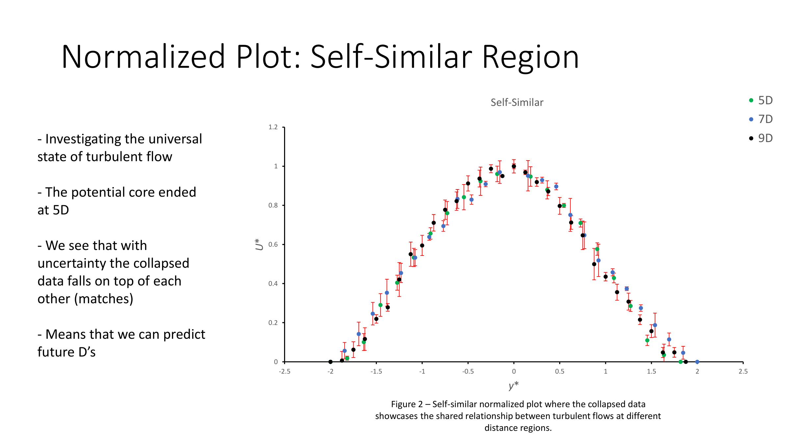
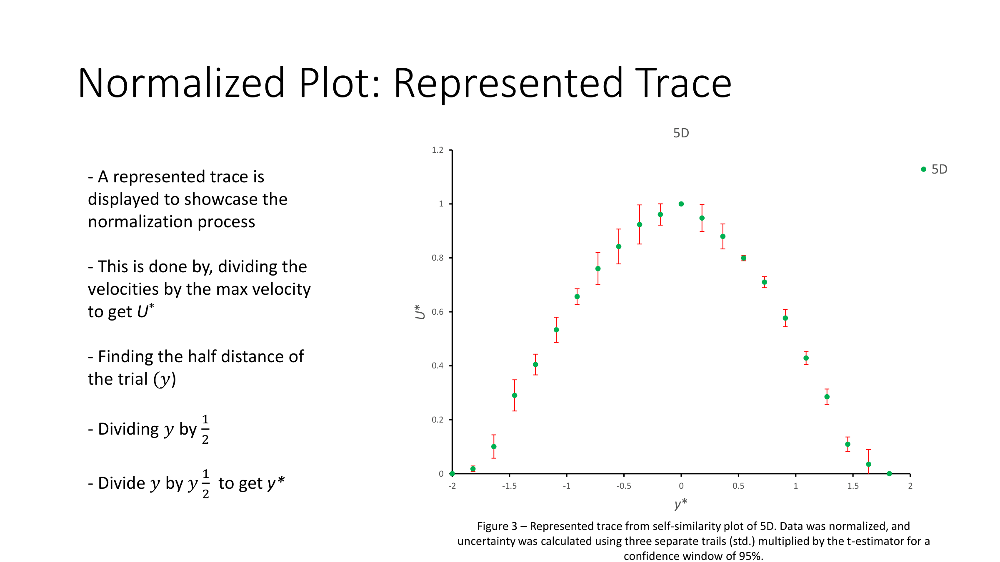
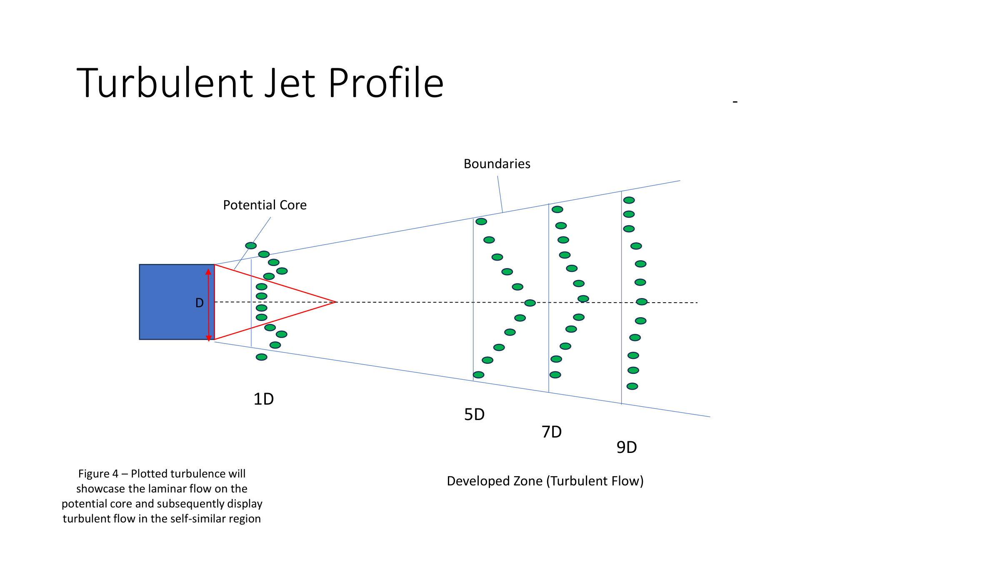
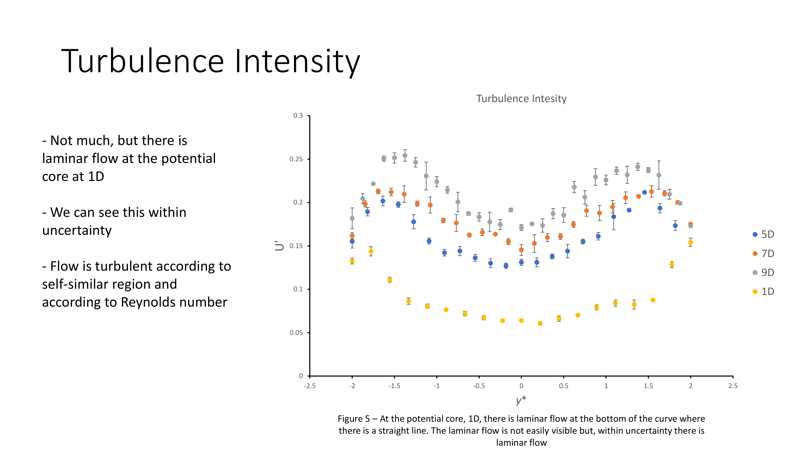
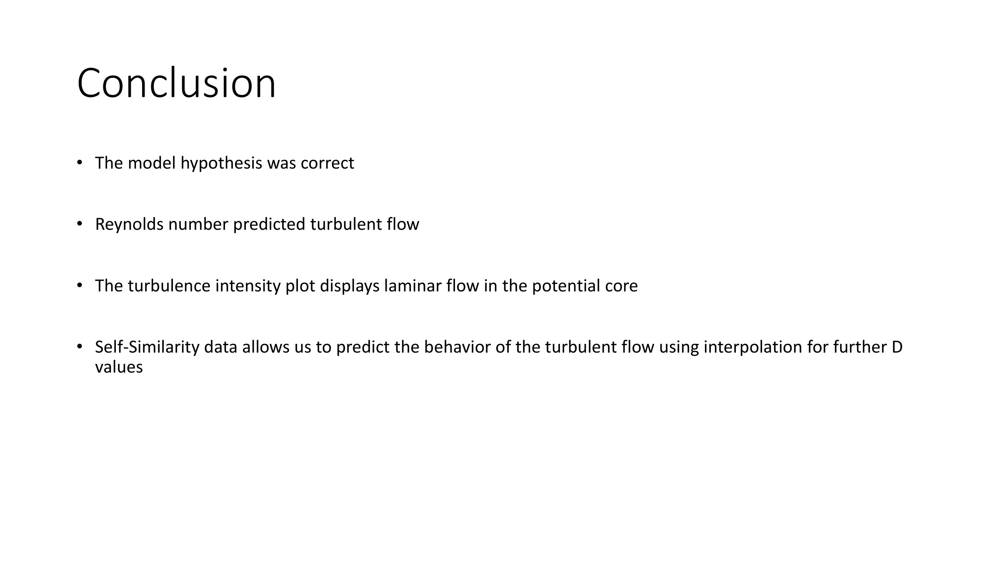

Project 05 · AME 341B · Mechoptronics Lab
AME 341B Lab Experiments — Fluid Mechanics & Aerodynamics
AME 341B · Mechoptronics Lab · University of Southern California
Course
AME 341B — Mechoptronics
Method
Pitot Tube + 2-Axis Traverse
Distances
1D, 5D, 7D, 9D from nozzle
Analysis
Self-Similarity, Turbulence Intensity
Tools
Python · Excel · Arduino DAQ
Project Overview
This experiment characterized a turbulent free jet by mapping the velocity field of an air stream at multiple downstream distances using a pitot tube mounted on a 2-axis traverse system. The goal was to verify self-similar behavior in a fully developed turbulent jet and compare measured profiles against theoretical predictions.
The experimental setup used a steady nozzle flow with a pitot tube sweeping a planar cross-section of the jet cone at downstream distances of 1D, 5D, 7D, and 9D (where D is the nozzle diameter). At each position, velocity data was collected across the jet width and processed to extract the mean velocity profile. Reynolds number analysis confirmed fully turbulent conditions (Re ≥ 104) at all measurement planes.
Data was normalized by the local centerline velocity and plotted against the similarity variable to verify self-similar collapse — a hallmark of developed turbulent jets. Turbulence intensity profiles were also extracted to identify the laminar potential core near the nozzle exit and the fully turbulent mixing region further downstream. Results matched the theoretical Gaussian profile and confirmed the hypothesis.
Report Slides — Velocity Profiles & Analysis









Click any slide to view full size · Use arrow keys to navigate
Downloads
Pitot Tube Experiment — Raw Data
Excel workbook with all collected velocity measurements and calculations
Analyzing Airwaves: Navigating Turbulence with Pitot Tubes
Full lab report — experimental setup, velocity profiles, self-similarity analysis, and conclusions
Airfoil Dynamics: Lift & Drag via Force and Momentum Balance
AME 341B · Mechoptronics Lab · University of Southern California
Airfoil
NACA0010
Velocities
10 m/s & 20 m/s
Reynolds No.
61,200 / 122,000
Methods
Force Balance & Momentum Balance
Tools
LabVIEW · Pitot Tube DAQ
Experiment Overview
This experiment evaluated the aerodynamic performance of a NACA0010 airfoil placed inside a wind tunnel at steady freestream velocities of 10 m/s and 20 m/s. The primary goal was to compare two independent methods — the force balance method and the momentum balance method — for calculating lift and drag coefficients across a range of angles of attack.
Reynolds numbers were calculated to characterize the flow regime: Re = 61,200 ± 1,100 at 10 m/s and Re = 122,000 ± 600 at 20 m/s, both confirming fully turbulent, inertia-dominated conditions. A pitot tube traversed the wake behind the airfoil with data acquired through LabVIEW VI software. Lift and drag forces were also directly measured using an integrated force balance mounted in the tunnel.
Results showed lift coefficient increasing consistently with angle of attack, with higher Reynolds number yielding greater lift — consistent with theory. The force balance drag plots revealed a slight asymmetry at low angles, while the momentum balance approach provided more accurate and stable drag estimates by integrating the wake velocity deficit. Both methods were compared and sources of discrepancy discussed in the full report.
Report Download
Airfoil Dynamics: Lift & Drag with Force and Moment Balance Methods
Full lab report — NACA0010 wind tunnel analysis, CL & CD vs. angle of attack, force vs. momentum balance comparison